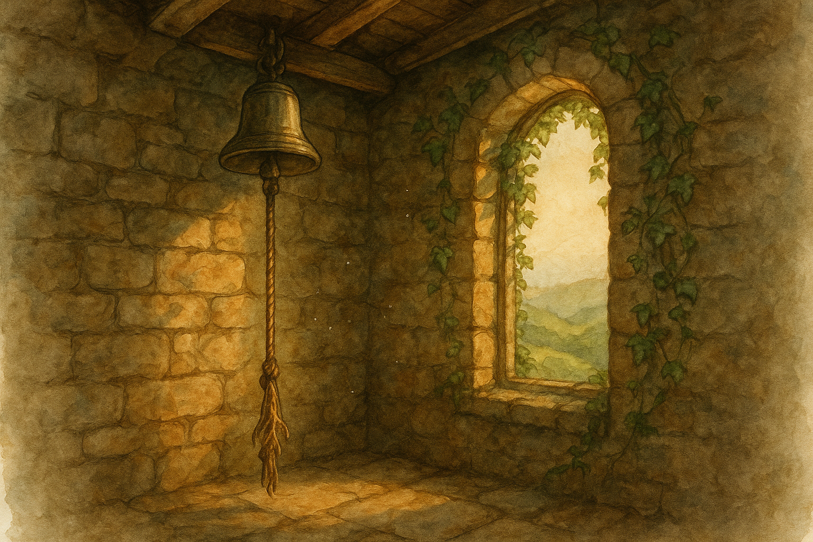

Fourth Age, in the Shire when the hedges are thick with spring and even old stone begins to smell of leaf and rain.
There are some things in the Shire that are meant to be rung: bells, kettles, and door-latches, in that order.
The tower at Bywater is not a grand tower, mind you. It is hardly tall enough to boast of, and it is not the sort of place you would write poems about unless you were a poet very much in need of practice. It is a plain round stump of stone set beside the road, built long ago when folk thought wolves were nearer than neighbours and a man’s voice did not always carry through fog.
At the top is a bell. It has no name, though more than one lad has tried to give it one after having too much ale. It is not a bell for kings or wars or solemn proclamations. It is a bell for ordinary emergencies: for fire in a thatch, for a child lost by the Water, for a cart gone over into a ditch, for the sort of trouble that comes sudden and must be met with boots on and sleeves rolled up.
The bell is rung by a rope that hangs down inside the tower, and that rope is what this tale is truly about. For the bellrope of Bywater is old—older than any hobbit can say with certainty—and in the years after the King’s peace came to the Shire it grew, little by little, a strange kind of shyness.
It began with ivy.
Now, ivy is a stubborn plant, but not an unkind one. It will wrap a stone like a shawl, and in winter it keeps the wind from worrying at cracks. The tower had always had a little ivy at its foot, a few leaves clinging to the north side where the sun is lazy. But in the Fourth Age it climbed higher, as if the stone had begun to tell it secrets. It found the mortar’s soft places and the spots where rain had made a narrow path. It made itself at home around the small high window where the bell’s voice goes out.
“Leave it,” said old Holman the mason, when the matter was brought up at the inn. “The tower’s sound enough. And the ivy looks better than bare rock. Bare rock makes folk think of hard times.”
“Hard times are exactly what I’m thinking of,” said Mistress Rumble, who kept the baker’s oven and had a nose for smoke a full minute before anyone else. “I want that bell to ring clean and quick if it must.”
So one windy morning a few of them went up—Holman with his hook-knife, two lads for hauling, and little Nibs Mugwort because Nibs could climb like a squirrel and could be trusted, mostly, not to fall off anything higher than a fence. They cut the ivy away from the window and from the stones where it had worked its fingers in. It came down in heavy ropes of green, smelling sharp and wet, like fresh-turned earth.
They did not cut the ivy inside the tower, because no one knew there was any inside the tower.
That is the first thing to remember. Ivy does not belong inside a bell-tower. If you find it there, it has been invited—or else it has come for reasons of its own.
A week later, the baker’s boy fell into the Water.
It was not deep, and in truth it was more of a tumble than a drowning, but the current by the old willow can catch at a small body and pull it into bad places, and the boy’s mouth came up coughing mud. Mistress Rumble saw it from the lane and shouted, and someone ran for the tower as folk have always run.
Now, the tower has a door that sticks in damp weather, and the rope is up a narrow stair, and there is always a moment when you think, If this is the day the bell is slow, it will be the day it matters.
The lad who ran—Hob Hayward’s youngest, quick as a hare—threw himself at the door and got it open. He bounded up the steps and seized the rope with both hands and pulled with all the urgency in his bones.
Nothing happened.
He pulled again, harder, enough to make his shoulders creak. The rope gave a little, as rope does, but the bell did not speak. No clear iron note went out over Bywater. No alarm rose like a bird from the tower’s mouth.
“Stuck!” the lad shouted down the stair, and his voice sounded small and frightened in the stone.
Holman ran up after him, cursing. He took the rope and yanked with a strength that had hauled beams into place and held carts on slopes. Still the bell was silent.
Down by the Water, the boy was pulled out by hands and luck, coughing and spluttering. The trouble passed, as troubles do when they mean to, but the memory of the bell’s silence did not.
They went up to look at it in calmer light.
The bell hung there as it always had, dull with dust, its iron lip worn smooth where it had bitten its own clapper for generations. The rope ran up to the beam, and there—where rope ought to meet wood—was a knot of green.
Ivy.
Thin at first glance, no thicker than a child’s little finger. But it was woven about the rope in a clever way, and it had taken hold around the beam as if it had been tied there with a sailor’s patience. When Holman cut it the sap ran clear and sticky, and the cut ends writhed back into shadow like living threads.
“That’s not natural,” said Nibs Mugwort, from the step behind them. He spoke quietly, which was unlike him.
“It’s ivy,” said Holman, though he did not sound convinced.
“Ivy doesn’t climb inside,” Nibs persisted. “Not unless it wants something in there.”
They cut it away, and they pulled the rope, and the bell rang then—one sharp note that startled a pigeon off a beam and made the dust jump. It sounded fine enough. They told one another it was a strange accident, and if you pressed them they would have said the ivy must have found a crack and crept in.
But Bywater folk are not fools. Not when a thing meant to save lives chooses to keep quiet.
After that, someone went up to the tower once a week to check the rope. Sometimes it was clear. Sometimes there was a fresh green twist about it, as if a careful hand had braided it while everyone slept.
And always—this is the oddest part—always the ivy was neat.
It did not choke the rope from top to bottom. It did not fill the stair or burst the stones. It wrapped only at the very point where a pull would move the bell, and it wrapped just enough.
So the talk began.
Some said it was a warning. “A sign that folk ring the bell too often,” said one man, who had once rung it because he thought he’d seen a goblin in a hedge and did not care to be reminded of it. “We’ve grown soft. We ring for a scorched pie-crust and call it danger.”
Others said it was a kindness. “The Shire has had its share of alarms,” said Mrs. Cotton, who had seen enough of war to last two lifetimes. “Maybe the tower is tired of shouting. Maybe it wants peace, same as we do.”
But Mistress Rumble, with flour on her apron and sense in her eyes, said: “A bell does not ring itself for pleasure. It rings because someone below needs help. If the rope is being tied, then someone is choosing who deserves help and who does not. And that is the worst kind of mischief.”
Now, there are folk in the Shire who will face down a badger for the sake of a henhouse, but there are few who like climbing a damp stone stair at midnight for the sake of arguing with a plant.
Yet that is what happened.
One night in early spring—when the air is full of wet leaf-smell and the frogs begin their sermons—there came a cry from the lane: a fire at Sandyman’s shed. Not a great blaze, but enough to take if it were not met quickly.
Someone ran for the tower.
And someone else ran, too: Nibs Mugwort, now a little older and no less nimble, with a lantern in one hand and a small hatchet in the other.
He did not wait for anyone. He went up ahead and stood in the tower’s narrow chamber with the bell above him, listening.
Down below, feet pounded the steps and voices rose. The rope hung in the lantern-light, frayed and honest, the sort of rope you trust because it has always been there.
Then, very softly, Nibs heard a sound like thread being drawn through cloth.
Out of the crack by the window—where the ivy outside had been cut to bare stone—came a single green tendril. It moved slowly, not like wind-blown leaf, but like something feeling its way.
It touched the rope.
It began to wrap.
Nibs did not shout. He did not freeze, though I would not have blamed him. He stepped forward and held his lantern close.
And in that close warm light, he saw what no one had seen before: the ivy did not wrap at random.
It made a knot.
A true knot, with a loop and a tuck and a pull, as if the plant had learned it from watching hands. It tightened itself with the neat finality of a sailor’s hitch.
Nibs raised his hatchet.
At that moment the bell above gave one small, sudden tink—not a full ring, only the sort of noise a bell makes when it is touched and does not mean to speak.
Nibs hesitated.
He would have sworn, later, that the ivy paused. Not because it was startled, but because it was listening.
Down the stair came Holman, wheezing and cursing, and after him Mistress Rumble with her hair loose and her apron thrown on like a cloak.
“It’s here,” said Nibs.
Holman saw the green coil on the rope and lifted his hook-knife.
“No,” said Mistress Rumble.
“No?” Holman stared at her as if she had said no to rain.
“Don’t cut it first,” she said. Her voice had the same tone she used when she told a loaf how it ought to rise: not pleading, not angry—certain. “Ring the bell. Let’s see what it does.”
Holman gripped the rope above the knot and pulled.
The ivy tightened.
The bell did not ring.
Outside, far off, there was a shout and the crackle of fire.
Holman pulled again, and the rope strained, and the ivy held like a hand.
Then Mistress Rumble did a queer thing.
She set her own lantern down on the floor. She took off her apron and folded it carefully, as if laying out a cloth for bread. She stepped to the rope and put her floury hands on it below the ivy.
“All right,” she said, quietly. “If you mean to choose, then answer me.”
Holman made a noise in his throat, but he did not stop her. There is a kind of courage that looks like stubbornness, and Shirefolk respect it.
“You’ve tied the rope for a boy in the Water,” she went on. “And for other trifles, I’ll wager. But there’s a fire now. Fire runs faster than feet. Are you keeping peace, or are you keeping us from helping?”
She put her face close enough that her breath stirred the leaves.
“If you are a warning,” she said, “then warn. If you are a kindness, then be kind to folk who need it. And if you are only mischief—then I’ll have you burned in my oven with the peelings.”
The ivy trembled.
It was not the tremble of fear, exactly. It was the sort of tremble a hand makes when it has been holding something too long.
Slowly—slowly as a knot being unthought—the green loop loosened.
The tendril slid back from the rope.
Holman seized the moment and pulled, and this time the bell rang out, loud and clean, its iron voice cutting the night like a bright knife.
When the last echo died, Nibs held up his lantern.
The ivy had withdrawn into the crack by the window. On the rope there was a faint green stain where it had been, and a single leaf clung there, trembling.
They went down and helped with the fire, and the shed was saved with only a blackened corner and a good deal of angry smoke.
The next morning Holman went up with his hook-knife to cut the ivy from the tower once and for all.
He found the rope clear.
He found the crack by the window filled, neatly and solidly, with a plug of fresh mortar the colour of pale bread.
No one in Bywater admitted to doing it.
Holman ran his thumb along it. It was smooth and well-set, as if it had been laid by a careful mason with a steady hand.
“That’s my work,” he said slowly, and then he frowned, because he knew it was not.
From that day, the ivy outside the tower grew as ivy always does: green, stubborn, and ordinary. It did not creep inside. It did not knot itself about ropes.
And the bell rang when it was pulled.
Bywater folk still tell the tale, especially when spring comes and ivy begins to climb. Some say the tower itself had learned too much of peace and needed to be reminded that peace is not silence, but the willingness to answer when you are called.
Others say there was a small spirit in the ivy, tired of alarms, trying clumsily to keep the Shire safe by keeping it quiet—until Mistress Rumble spoke to it like a neighbour and gave it back its proper work.
As for me, I only know this: there is a difference between a bell that does not ring because it is broken, and a bell that does not ring because something has decided you ought not to hear it. If ever you find a rope tied in a place meant for pulling, do not assume it is only ivy.
— Bilbo